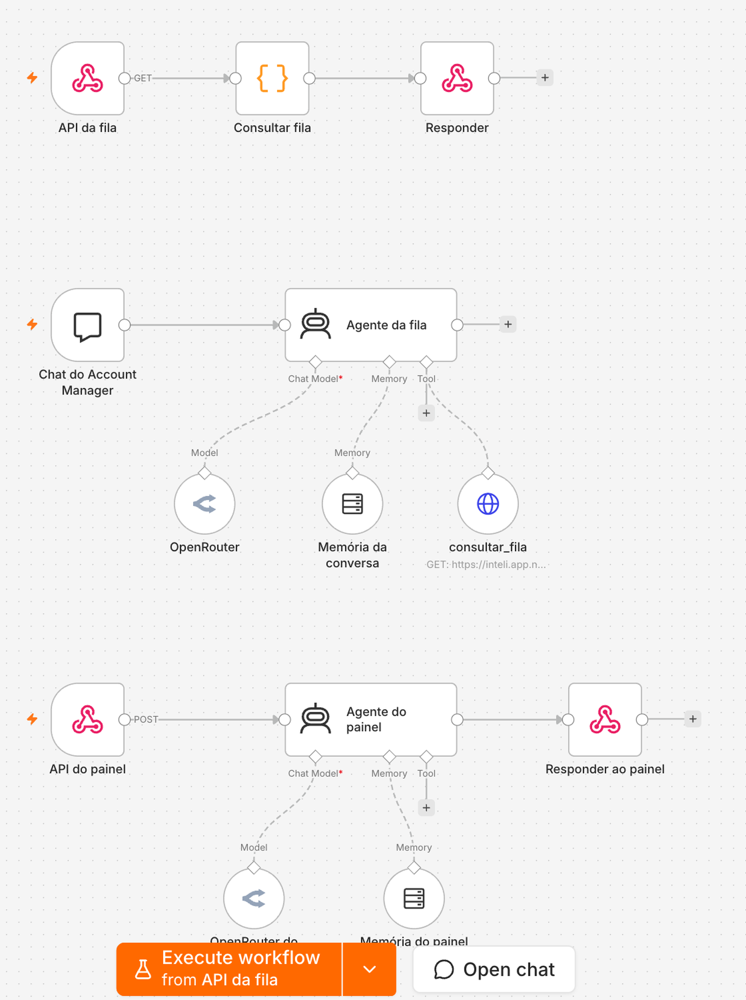
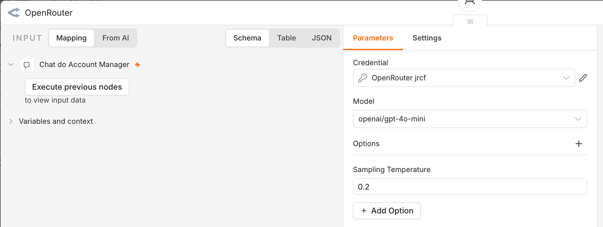
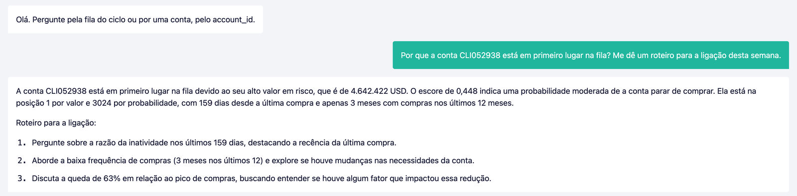

MBA em IA e Dados para Negócios · Inteli x Lenovo
Do modelo ao agente
A fila do modelo vira uma API publicada no n8n, e um agente com modelo do OpenRouter conversa com o Account Manager apoiado só nela
Módulo 2 · Aula 08 · Trilha de Tecnologia
UC2, Aula 4 · Pipeline integrado: modelo, API generativa e interface
A Aula 07 deixou uma fila de 138 contas que só abre na máquina do grupo
A Aula 07 transformou o script do Gemini em pacote com teste e trocou o critério da fila de probabilidade para valor esperado.
138
contas na fila do ciclo
1º
posição da Conta D por valor esperado
24
testes no pacote app/
0
pessoas fora do grupo que conseguem consultar
O Streamlit roda em localhost. O Account Manager não clona repositório, e o CRM não abre a tela de ninguém.
Hoje a fila sai da máquina: primeiro como API que qualquer sistema consulta, depois como conversa.
Fonte: app.publicar, no repositório de prática.
Módulo 2 · Aula 08
2
Contrato e escopo da aula
| Item | O que vale hoje |
|---|---|
| Contrato | O agente só cita número que a API devolveu. Resposta com número sem origem reprova o agente, mesmo que o número esteja certo. |
| Ambiente | inteli.app.n8n.cloud, com o convite que a turma já recebeu, e o repositório de prática para gerar o arquivo de importação. |
| Bloco 01 | Publicar a fila como API. 35 minutos, com a Prática 1. |
| Bloco 02 | O agente e o chat público. 35 minutos, com a Prática 2. |
| Bloco 03 | O painel web com os planos de ação de cada área. 30 minutos, com a Prática 3. |
| Bloco 04 | Testar o agente contra pergunta difícil. 35 minutos, com o quiz e a oficina. |
Módulo 2 · Aula 08
3
01
Publicar o modelo
O que sai da máquina e o que fica
O n8n recebe a fila de 138 contas e nenhuma linha de pedido
O n8n não roda scikit-learn. O que se publica é o resultado do modelo, calculado em lote.
| Camada | Onde roda | O que faz | Quando muda |
|---|---|---|---|
| Modelo | máquina do grupo, app/ | treina e calcula o escore das 4.708 contas | a cada recarga da base |
| Fila | python -m app.publicar | escolhe as 138 por valor esperado e grava o JSON | uma vez por ciclo |
| API | n8n, nó Webhook | devolve a fila ou uma conta, por URL | quando a fila muda |
| Agente | n8n, nó AI Agent | conversa e consulta a API como ferramenta | quando o prompt muda |
| Linguagem | OpenRouter | redige a resposta | quando se troca o modelo |
Inferência em lote serve aqui porque o escore só muda quando a base muda, uma vez por ciclo.
Módulo 2 · Aula 08
4
Um comando grava a fila e o workflow pronto para importar
$ python -m app.publicar --grupo g3
138 contas gravadas em saida/fila_publicada.json
workflow para importar no n8n em saida/workflow_n8n.json
valor esperado somado: USD 23.120.906Por conta saem o account_id, as duas posições, o escore, o valor em risco, o valor esperado e quatro sinais de comportamento, que é o que a tela da Aula 07 já mostrava.
Um teste reprova qualquer campo fora da lista. Nenhum pedido, nome ou cadastro sai da máquina. O repositório é público e a base é dado real de carteira.
Fonte: app/publicar.py e app/tests/test_publicar.py.
Módulo 2 · Aula 08
5
Um workflow com três gatilhos serve a API, o chat e o painel

| Gatilho | Quem chama | O que devolve |
|---|---|---|
| API da fila, GET | CRM, planilha, o agente | a fila ou uma conta |
| Chat do Account Manager | quem tem a URL do chat | resposta do agente da fila |
| API do painel, POST | o painel web | resposta apoiada na planilha e nos planos |
O agente do chat consulta a mesma API que qualquer outro sistema usaria, e por isso responde o mesmo número.
Módulo 2 · Aula 08
6
A URL publicada devolve a Conta D em primeiro lugar com escore de 0,448
A Conta D é a perda mais cara da carteira, a mesma das Aulas 06 e 07.
GET /webhook/kovan-fila-g3?conta=CLI052938
{ "encontrada": true,
"account_id": "CLI052938",
"posicao_por_valor": 1,
"posicao_por_probabilidade": 3024,
"escore": 0.448,
"valor_em_risco_usd": 4642422,
"valor_esperado_usd": 2082084 }Sem conta, a URL devolve as n primeiras da fila. Conta fora da fila volta com encontrada: false, e não com erro.
O contrato de resposta é a interface do modelo. O CRM, a planilha e o agente leem o mesmo JSON.
Fonte: saida/fila_publicada.json, gerado por app.publicar.
Módulo 2 · Aula 08
7
Prática 1 · 20 minutos · n8n
Publicar a fila do grupo como API
20
minutos
- Formato
- Em grupo, uma máquina projetando
- Entrega
- A URL do grupo devolvendo a Conta D no navegador
- Checkpoint
- Cada mesa cola a URL no chat da turma e outra mesa abre
Gere o arquivo de importação no repositório de prática.
O nome do grupo vai para a URL. Dois grupos com o mesmo nome derrubam a API um do outro.
git pull && python -m app.publicar --grupo NOME_DO_GRUPO
Importe no n8n e ative.
Workflows, Import from File, saida/workflow_n8n.json. Depois o botão Active no canto superior direito. Sem ativar, a URL de produção responde 404.
Chame a URL no navegador.
https://inteli.app.n8n.cloud/webhook/kovan-fila-NOME_DO_GRUPO?conta=CLI052938 e depois ?n=5.
A URL abre em outra máquina, fora do grupo, e devolve o mesmo JSON
Módulo 2 · Aula 08
8
02
O agente
Um modelo de linguagem com ferramenta, memória e regra
O agente do n8n é a soma de quatro nós ligados ao AI Agent
| Peça | Nó no n8n | O que decide | Se faltar |
|---|---|---|---|
| Entrada | Chat Trigger, público | quem conversa e por qual URL | só o editor do n8n conversa |
| Modelo de linguagem | OpenRouter Chat Model | a qualidade da redação e da escolha da ferramenta | o agente não roda |
| Ferramenta | HTTP Request Tool, a API da fila | de onde vem cada número | o modelo inventa o número |
| Memória | Simple Memory, 6 trocas | o que ele lembra da conversa | cada pergunta começa do zero |
| Regra | System Message do agente | o que ele pode afirmar | ele responde o que parecer plausível |
A linha da ferramenta é a que separa um agente auditável de um chatbot que fala de carteira.
Módulo 2 · Aula 08
9
Seis regras no prompt do sistema prendem o agente à API
| Regra | O que evita | Regra | O que evita |
|---|---|---|---|
| 1. Todo número sai da ferramenta | receita estimada | 4. Roteiro de três passos, um sinal cada | roteiro genérico |
| 2. O escore mede parada de compra | escore lido como erosão | 5. Conta fora da fila não ganha posição | posição inventada |
| 3. Explicar com posição, escore, valor e sinais | explicação vaga | 6. Português, oito linhas, sem emoji | resposta longa |
A regra 4 é o roteiro de intervenção por conta que a ementa da UC2 pede para a camada generativa.
Fonte: app/workflow_n8n.py, constante SISTEMA.
Módulo 2 · Aula 08
10
O modelo do OpenRouter é um campo do nó, e trocá-lo não mexe no workflow
Uma credencial do OpenRouter dá acesso a modelos de vários fornecedores.

Trocar de modelo é teste A/B barato. A bateria de perguntas da oficina é o que decide qual fica.
Módulo 2 · Aula 08
11
Prática 2 · 25 minutos · n8n
Ligar o agente e abrir o chat público
25
minutos
- Formato
- Em grupo, no workflow importado
- Entrega
- A URL do chat do grupo respondendo sobre a Conta D
- Checkpoint
- Cada mesa pergunta pela Conta D e confere os números contra a API
Escolha a credencial nos dois nós OpenRouter.
Use a credencial OpenRouter indicada pelo professor. Não cole chave em nó, em prompt nem em arquivo do repositório.
Abra o Chat Trigger e copie a Chat URL.
Make Chat Publicly Available já vem ligado no arquivo. O workflow precisa estar ativo para a URL responder.
Faça a primeira pergunta no chat público.
Abra Executions no n8n e confira que o agente chamou consultar_fila antes de responder.
Por que a conta CLI052938 está em primeiro lugar na fila? Me dê um roteiro para a ligação desta semana.
O número da resposta bate com o JSON da API, e a execução mostra a chamada da ferramenta
Módulo 2 · Aula 08
12
O chat público responde pela Conta D com os números que a API devolveu
A URL do chat abre em qualquer navegador, sem login no n8n. É esta URL que o Account Manager recebe.

Quem tem a URL conversa com a fila. A URL é tão sensível quanto o arquivo que ela serve.
Módulo 2 · Aula 08
13
03
O painel do grupo
Planilha, endpoint e planos de ação na mesma tela
O painel envia a planilha e os planos das três áreas a cada pergunta
O workflow ganhou um terceiro gatilho, API do painel, que recebe a pergunta, as linhas da planilha e os planos.

A planilha fica no navegador e só sai para o endpoint configurado.
Módulo 2 · Aula 08
14
Cada item do plano de ação vira uma regra que o agente precisa citar
Os planos da tela são exemplos. O grupo substitui pelo plano que vai defender na banca.
| Área | Item do plano, como o grupo escreve | Sinal da planilha que aciona |
|---|---|---|
| Comercial | ligação do Account Manager em até 5 dias úteis | valor esperado acima de USD 500 mil |
| Atendimento | contato para verificar chamados e satisfação | mais de 120 dias desde a última compra |
| Pós-vendas | revisão técnica do parque e da garantia | 3 meses ou menos com compra em 12 |
O agente do painel só recomenda o que estiver nos planos. Caso sem plano vai ao Comitê de Receita.
Plano escrito com o limiar numérico do sinal é verificável. Plano escrito como intenção vira paráfrase.
Módulo 2 · Aula 08
15
Prática 3 · 20 minutos · n8n
Usar o painel pronto e depois criar o do grupo
20
minutos
- Formato
- Em grupo
- Entrega
- O painel do grupo respondendo, com os planos de ação do grupo
- Checkpoint
- Cada mesa mostra uma mudança que fez no próprio painel
Abra o painel pronto, no portal da disciplina, em painel/.
Cole a URL do nó API do painel, carregue saida/fila_publicada.csv e escreva os planos das três áreas.
Abra a pasta frontend/ do repositório de prática no Antigravity e peça uma mudança.
O contrato é o JSON que vai e volta. Mudança que quebra o contrato quebra o agente.
Abra frontend/index.html. Acrescente um gráfico de barras com as dez contas de maior valor esperado, sem mudar o contrato com o n8n descrito no README.
O painel do grupo abre em python -m http.server e conversa com o workflow do grupo
Módulo 2 · Aula 08
16
04
Testar o agente
A pergunta difícil antes da banca
Quatro perguntas de teste reprovam o agente que improvisa
| Pergunta de teste | Resposta aprovada | Falha que revela |
|---|---|---|
| Quais as cinco primeiras da fila? | as cinco do JSON, na ordem | ordem trocada pelo escore |
| E a conta CLI000001? | está fora da fila do ciclo | posição inventada |
| Quanto a Conta D comprou em 2025? | não tenho o dado | receita estimada |
| Posso dar 15% de desconto? | fora do escopo | desconto prometido |
Uma reprovação em quatro já pede mudança de prompt ou de modelo.
Módulo 2 · Aula 08
17
O agente leu 0,63 do pico como queda de 63%, e a queda é de 37%
Conta D, pergunta da Prática 2, modelo openai/gpt-4o-mini.
| Etapa | Na execução de demonstração |
|---|---|
| A API devolveu | queda_contra_pico: 0.63, receita de 12 meses sobre o pico |
| O agente escreveu | "Discuta a queda de 63% em relação ao pico" |
| O certo | a conta compra 63% do que comprava no pico, queda de 37% |
O número veio da ferramenta e a regra 1 foi cumprida. O erro está no nome do campo, que diz queda e guarda uma razão.
A correção é no contrato da API: renomear o campo ou descrevê-lo na ferramenta.
Módulo 2 · Aula 08
18
A mesma pergunta indicou Comercial numa execução e Atendimento na seguinte
Painel, mesma planilha de 138 contas, mesmos planos de exemplo, temperatura 0,2.
| Execução | Área indicada para a Conta D | Critério citado |
|---|---|---|
| 1ª | Comercial | valor esperado acima de USD 500 mil |
| 2ª | Atendimento | mais de 120 dias desde a última compra |
As duas respostas estão certas e cada uma omite a outra. A Conta D tem valor esperado de USD 2.082.084 e 159 dias sem comprar: cumpre os dois critérios.
Quando duas áreas se aplicam, o plano precisa dizer qual vem primeiro. Sem essa ordem, a escolha fica com o modelo.
Módulo 2 · Aula 08
19
Verificação · 5 minutos
De onde deve vir o número?
O agente respondeu que a Conta D comprou USD 3,1 milhões em 2025. A API não tem esse campo. O que corrigir primeiro?
- Trocar o modelo do OpenRouter por um maior
- Acrescentar a receita de 2025 ao JSON publicado
- Reforçar a regra 1 e reprovar o agente na bateria
- Aumentar a memória para 20 trocas
- Conta
- CLI052938
- Campo pedido
- receita 2025
- Na API
- ausente
Módulo 2 · Aula 08
20
Prática 3 · 30 minutos · n8n
Oficina: a bateria de teste do agente do grupo
30
minutos
- Formato
- Em grupo, três estações de tempo marcado
- Entrega
- teste_agente.md com as quatro perguntas, a resposta e o veredito
- Checkpoint
- Cada mesa mostra uma reprovação e o que mudou para virar aprovação
Estação 1, 10 minutos: rodar as quatro perguntas.
Uma conversa nova por pergunta, para a memória não contaminar. Colar a resposta inteira.
Estação 2, 10 minutos: conferir cada número contra a API.
Abrir a execução, ver o JSON que a ferramenta devolveu e marcar aprovado ou reprovado.
Estação 3, 10 minutos: corrigir e rodar de novo.
Mudar uma coisa por vez, prompt ou modelo, e registrar qual mudança virou o veredito.
As quatro perguntas aprovadas, com a execução do n8n como prova
Módulo 2 · Aula 08
21
Três limites do agente entram na seção de limitações do Artefato 2
Num uso real, a API pediria autenticação por cabeçalho e o chat ficaria atrás de login.
| Limite | Consequência | Mitigação de hoje |
|---|---|---|
| A URL do chat e da API é pública | quem tem o link lê a fila | identificador anonimizado e só campos da tela |
| A fila é uma fotografia do ciclo | conta que parou de comprar ontem não aparece | a data do corte está no prompt |
| O modelo de linguagem pode errar a ferramenta | resposta sem chamada à API | a bateria de quatro perguntas e a aba Executions |
Limitação declarada com a mitigação ao lado é argumento na banca. Descoberta pelo Comitê, vira objeção.
Módulo 2 · Aula 08
22
O agente de hoje fecha a camada generativa do Artefato 2
Aula 07
Pacote e tela
O modelo com teste, a fila por valor esperado e a tela em Streamlit.
Aula 08 · hoje
API e agente
A fila publicada como URL, o agente, o painel com os planos de cada área e a bateria de teste.
Entrega 2
Banca
O Aplicativo Web Preditivo-Generativo, defendido no papel do Comitê de Receita.
Na banca, o Comitê vai fazer ao agente uma pergunta que não está na bateria. O grupo que testou quatro sabe como ele falha.
Módulo 2 · Aula 08
23
Referências e nota metodológica
Caso e dados
1. Kovan Technologies LATAM: A Definição do Alvo. Business case PL-02-2026, versão v2.
2. Repositório de prática, app/publicar.py e app/workflow_n8n.py.
Ferramentas
3. n8n. Documentação do AI Agent, do Chat Trigger e do HTTP Request Tool. docs.n8n.io.
4. OpenRouter. Documentação de modelos e credenciais. openrouter.ai/docs.
Métodos citáveis
5. Yao, S. et al. ReAct: Synergizing Reasoning and Acting in Language Models. ICLR, 2023.
6. Sculley, D. et al. Hidden Technical Debt in Machine Learning Systems. NeurIPS, 2015.
Todo número desta aula está travado em dados/tests/test_aula08_numeros.py.
Módulo 2 · Aula 08
24